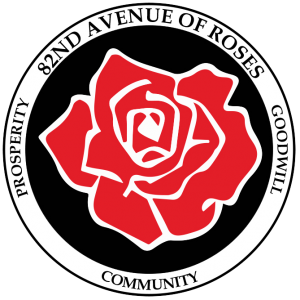

Hi, I am Ahlam!

I'm running for City Council because I envision a more equitable and sustainable future for Portland. Our neighborhoods and their diverse communities deserve livable built environments that are healthy, safe, and thriving. As a daughter of Somali refugees and native Portlander, I've witnessed the profound effects of underrepresentation in civic leadership and local decision-making. Together, let's reimagine a brighter, healthier, and safer future for Portland.


Ahlam’s Key Issues
Environmental and Climate Advocacy:
My goal is to
advocate for climate justice by prioritizing climate resiliency for
frontline communities, recognizing the interrelation of the climate
crisis with urban infrastructure, housing, and health disparities. I
aim to promote equal environmental protection for all, irrespective
of race, color, or national origin, within an intersectional
environmentalism framework.
People-First, Human-Centered, and Inclusive Approach to Local
Decision Making:
People and communities must be viewed as assets and as key
actors in the issues that impact them the most. This includes youth,
immigrants, refugees, and historically left out voices. A
community-driven process increases the flow of critical data from
communities and community leaders to policy-makers.
Economic Justice, Support for Small Businesses and
Entrepreneurship:
My goal is to promote economic justice by advocating for fair
and equitable economic systems that address income inequality,
wealth gaps, poverty, and systemic barriers to financial opportunity
for all individuals and communities.
Values
Environmental Justice and Economic Empowerment
Equitable and Inclusive Civic Engagement
Social Justice and Racial Equity
About Me

Ahlam Osman is a young Somali American who explores the intersectionalities of race and climate issues and believes in the importance of empowering communities through policy advocacy and building political power. Osman served on The Multnomah Youth Commission, the official youth policy body for both Multnomah County and the City of Portland, from her first year of high school to her first year of university.
2018 to 2020, Osman was an intern with Metro under their Waste Prevention and Environmental Services (WPES) department, where she learned about the regional waste management system and the overall power a unique regional body like Metro acquires. Through her time with MYC, and Metro, and volunteering with grassroots organizations, she learned the cruciality of communities being informed of their local government systems, and for policy and decision-makers to play an active role in meeting communities where they are at.
In her work, she aims to create platforms to address environmental disparities within frontline communities, including Black, brown, and immigrant populations. Ahlam is a student at Portland State studying community development. She has a passion for environmental justice, equitable, sustainable, and people-centered planning and development, and is committed to using her skill sets in problem-solving, community engagement, and creative thinking to bring equity to every facet of this work.
Beyond her environmental efforts, Ahlam is a small business owner; and co-founder of a new coffee shop in town, Above GRND Coffee. As an urbanist and multidisciplinary professional, this passion project shows her commitment to what she calls community-economic development through place-making in Portland’s local business landscape.
Family History
In the early 1990s, my parents fled their home in Mogadishu, with my 6 siblings, during the country’s bloody civil war. My family spent four years in a refugee camp in Kenya, where conditions were cramped and necessities scarce. Our family survived, thanks to financial support from my father’s uncle who lived in Los Angeles.
My uncle helped bring my family to California, but they moved to Portland five years later after my mother developed asthma. Portland, they thought, offered cleaner air – though we later realized it was far from pristine, especially during fire season. Portland has one of the worst air quality rates, and living and growing up in SE Portland which has higher levels of pollution and less tree canopy, doesn’t help.
I am my parents' youngest daughter, and I have 10 siblings. I come from a lineage of survivors, hard-workers, and changemakers, and I plan to honor this legacy by continuing this line of work.
Leadership
Momentum Alliance Board Member
Verde Action 501c4 Board Member
82nd Ave Business Association Board Member

Experience
Small Business Owner / Entrepreneur:
Co-founder and Co-owner of Above GRND Coffee
Community Development Student at Portland State University
Completed the 2023 Black Excellence Leadership Table (BELT) with Unite Oregon
Multnomah Youth Commissioner (Voting Member and Youth Against Violence Committee Co-Chair) 2016-2020
Metro Waste Prevention and Environmental Services (WPES) Metro Internship Cohort
Faithfully Sustainable Volunteer Organizer
Accomplishments
Somali Empowerment Circle (SEC):
Directed webinars on affordable housing,
led behavioral health focus groups, connected stakeholders to
policy-makers throughout Multnomah and Washington County, connected
community members to housing, and maternal health resources. Housing
justice work in partnership with Housing Connector and Housing
Multnomah Now. This year, I have been working on building an
environmental justice and advocacy program with a specific focus and
strategy on collecting data and conducting research with the Black
and African populations in East / SE Portland, and working on
environmental programming with Portland Harbor Community Coalition
(PHCC) to engage youth of color and families impacted by the
Portland Harbor EPA SuperFund Site.
AYCO Youth Environmental & Workforce Development Coordinator:
Collaborated with local organizations
and groups to develop community-driven plans for youth and families,
implemented workforce development programming for high school and
college youth, and monitored progress toward environmental and
economic development goals. Knowledge-building sessions on local
political systems and on the importance of political power in
steering change. Engaged in partnerships with groups organizing the
redevelopment of 82nd avenue, such as Verde and Better 82nd
Coalition. Started partnership with Portland Harbor Community
Coalition.
CLEAResult- Energy Efficiency Program Intern:
Managed data, engaged customers,
represented programs at events, and supported community engagement
and DEI initiatives in ClearResult's and Energy Trust's energy
efficiency program. Learned about the Energy (efficiency) industry
and the marginalized communities facing the most energy burdens.
Media
Ahlam Osman Addresses Climate Challenges In Urban Environmental Advocacy
MYC Builds Leaders and Grows Community Impact
'Not understanding the system, and the language barrier, are all contributors to the lack of civic engagement. I also feel like our elected officials and local politicians don't do a great job coming to our community and meeting us where we're at. I just think there's a huge disconnect between our local politicians and our community,' said Osman.